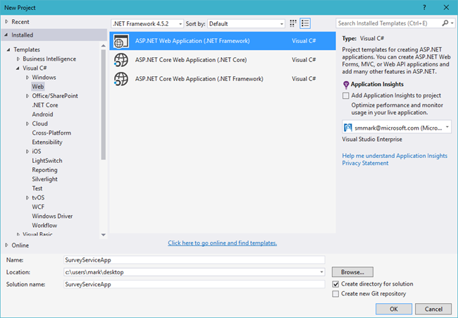
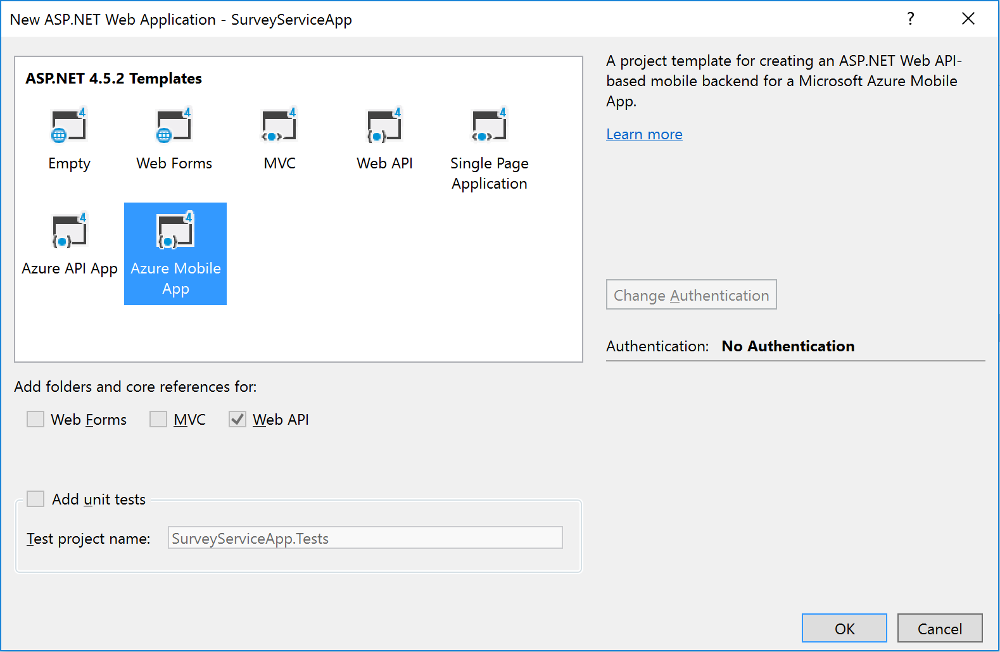
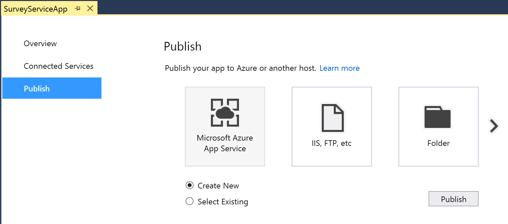
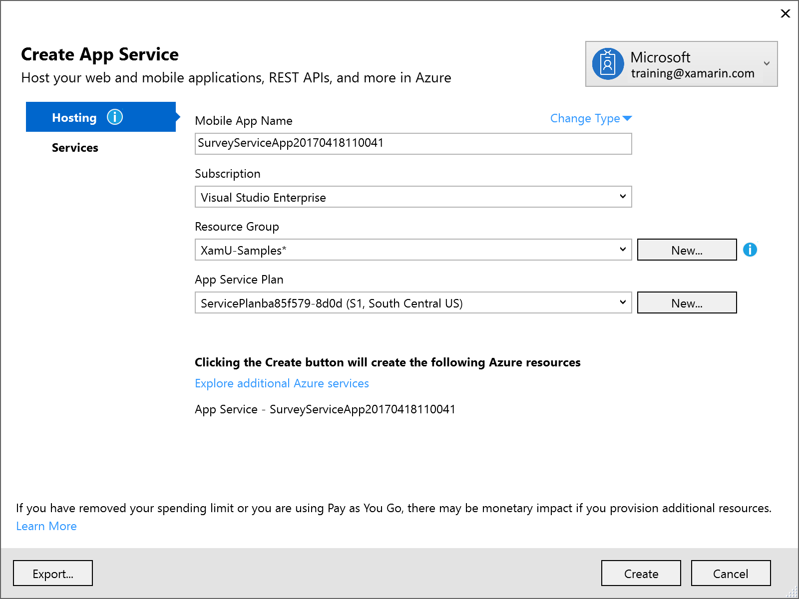
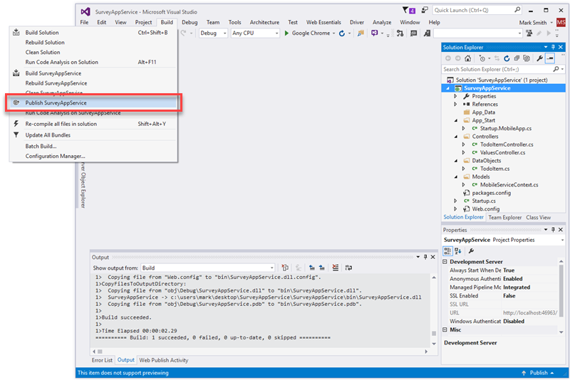
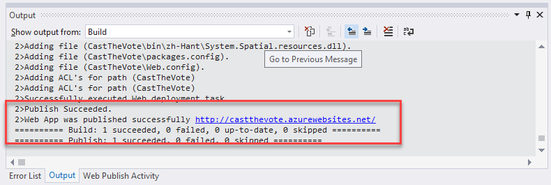
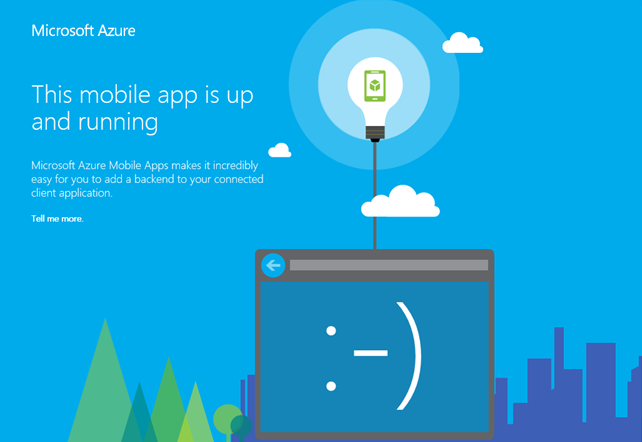

Duration
15 minutes
Goals
In this lab exercise, you will create a new Azure mobile service using Visual Studio.
Assets
There is a completed version of the exercise in the Exercise 1/Completed folder. We recommend that you not rely on this unless absolutely necessary to ensure you have the latest project template + Azure SDK settings. In addition, this project is not connected to an Azure instance - you will need to publish it yourself to use it with Azure, or run it locally throughout all the exercises.
Steps
Create a new Azure service
- Open Visual Studio and create a new solution.
- Select ASP.NET Web Application from the Web category and give it the name "SurveyAppService".
- Uncheck the "Add Application Insights" option if it's checked in the dialog. (Visual Studio App Insights is an analytics solution supported by Azure for tracking and monitoring applications. We won't be covering this product here.) 
- On the web application screen, select the Azure Mobile App template. Click OK to create the application 
- Visual Studio will create and load the new solution. Once your web application is created, an Overview screen will display. Switch to the Publish tab to start setting up your Azure deployment configuration. Make sure Microsoft Azure App Service and the Create New option is selected and click Publish. 
- This will open the publishing configuration dialog. We want to hosting this in Azure.
- Our application will be a voting/survey application so pick an appropriate name that Azure allows. Remember this will be used to generate your public URL to the service so it must be globally unique across all of Azure.
- Create a new Resource Group to associate all your app resources with so you can delete them when you are finished with the exercise.
- Select a pricing tier, it's recommended that you use S1 - Standard as a minimum, but you can select any tier including the free tier and it should work.
- Place the service in a region close to you.

- Depending on your version of Visual Studio, it may automatically publish to Azure. If not, Build the project, then use the Build > Publish option to publish your server code to Azure. This option is also available from the project's context menu in the Solution Explorer. 
Test the service
If it didn't launch the published URL automatically, check the service and verify it is running by clicking the URL link in the build window after it has succesfully been published. You can also get this URL from your Azure management console or the Visual Studio Publish configuration screen as well.
This should open a web browser with the default page:
Summary
In this exercise, you created a new mobile app in Azure using Visual Studio.